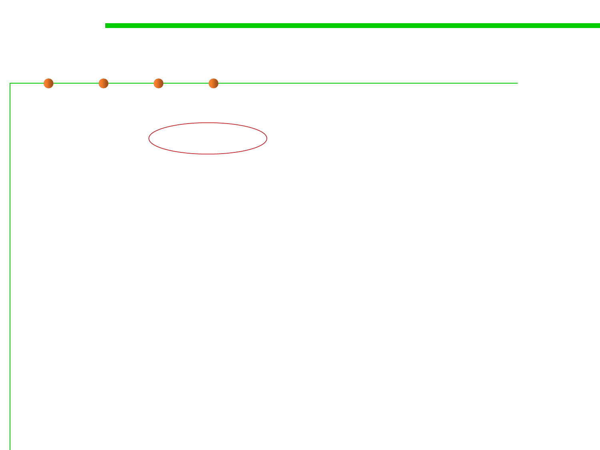

6.1 Metrics and Construction Principles for Maintainability
Dependency Inversion Principle
//DIP - fixed
public class EmployeeService {
private IEmployeeFinder emFinder
//depends on an abstraction, no an implementation
public Employee findEmployee(…) {
emFinder.findEmployee(…)
}
}
▪ Now its possible to change the finder to be a XmlEmployeeFinder,
DBEmployeeFinder, FlatFileEmployeeFinder,
MockEmployeeFinder….